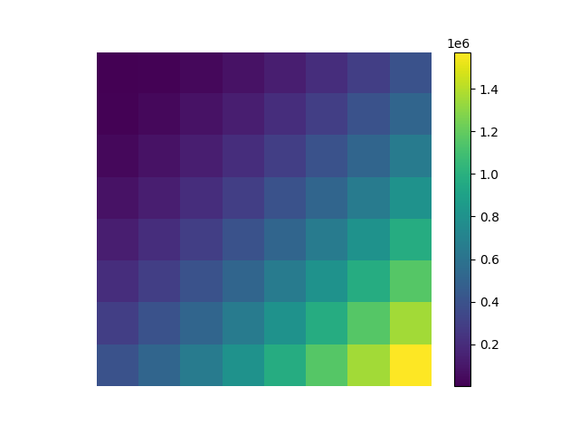

Quantization
Where we actually throw information away: after the transform, before entropy coding.
Frequency-Weighted Step Sizes
Not all frequency data is important. The human eye is sensitive to large-scale changes in brightness (low frequencies) but struggles to notice fine, rapid textures (high frequencies). We exploit this using Frequency-Weighted Quantization. We do this by creating a 8x8 quantization matrix where values closest to the top left (lower frequency terms) have lower values than values closer to the bottom right (higher frequency terms). After making the matrix, we perform element wise division on the 8x8 frequency blocks of the original image. This causes high frequency terms to approach zero (large divisor) and low frequency terms to decrease only slightly. After performing division, each term is then rounded to the nearest integer. This is where the actual data loss occurs and it allows the encoder to more effectively compress the truncated values.
How the Matrix Works:
-
The DC term: The top-left value (DC coefficient) represents the
block's average brightness. Our
build_quantization_matrixassigns this a smaller step size to prevent "flickering" or massive color shifts. - Quadratic Growth: As we move toward the bottom-right, the step sizes grow quadratically. Large divisors force high-frequency coefficients toward zero, where they can be efficiently compressed.
- The Quality Scaler: A global multiplier that scales the entire matrix, allowing us to pivot between "perfect detail" and "maximum space savings."

Implementation Detail: This logic is encapsulated in codec/tools.py under
build_quantization_matrix().
PCA-aware scaling (hybrid pipeline)
Beyond frequency, we also scale quantization based on channel importance. After PCA, the first eigen-channel carries the most perceptual energy (similar to luminance). We apply the base matrix there. The second and third channels get the same matrix multiplied by a larger factor (e.g. 6×) so chroma-like components are quantized more coarsely. JPEG’s separate luma and chroma tables follow the same idea, but here the “channels” are PC axes instead of YCbCr.
Quantized coefficients are rounded to integers; dequantization multiplies by the same matrix (and channel scale) on decode so the encoder and decoder stay matched bit-for-bit aside from loss from rounding.